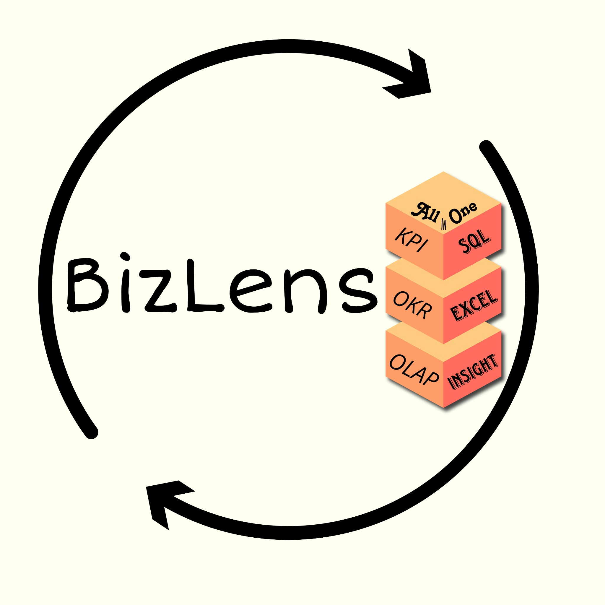

01

Startup project
BizLens
AI & Data Analytics
BizLens is an early-stage startup project exploring how AI, analytics and business intelligence can turn business data into practical insights.
Explore BizLens ↗BBA BUSINESS ANALYTICS · STUDENT ENTREPRENEUR
I’m a Business Analytics student at Kristu Jayanti University, Bengaluru, building practical skills at the intersection of data, business and AI.
A little about me
Subhojit Choudhary is a BBA Business Analytics student at Kristu Jayanti University in Bengaluru, India, and a student entrepreneur building BizLens, an early-stage AI and business analytics startup project.
I’m interested in how data and technology can make business decisions clearer, faster and more useful. I’m developing hands-on skills in Python, SQL, Excel, business intelligence and creative editing while turning coursework and ideas into projects.
Selected work
Projects are where I turn coursework, curiosity and experimentation into something tangible.

Startup project
AI & Data Analytics
BizLens is an early-stage startup project exploring how AI, analytics and business intelligence can turn business data into practical insights.
Explore BizLens ↗Analytics portfolio
Python · SQL · Excel
A growing collection of analysis, dashboards, data-cleaning exercises and business problem-solving projects as I continue learning.
View GitHub ↗What I’m learning
Programming, data handling and analytical workflows.
Working with structured data and analytical queries.
Spreadsheets, analysis, reporting and business models.
Connecting data with practical business questions.
Visual storytelling, design and content editing.
Where I’m headed
Studying at Kristu Jayanti University while developing analytics and business skills.
Exploring an AI-powered approach to practical business analytics and insights.
Building, publishing and learning through real datasets, business cases and software projects.
Public profile
Find my work, professional profile and public projects across the web.
Current CV
View the current one-page CV with education, skills, interests and contact details.
Let’s connect
For collaborations, projects or professional conversations, reach out through LinkedIn or email.